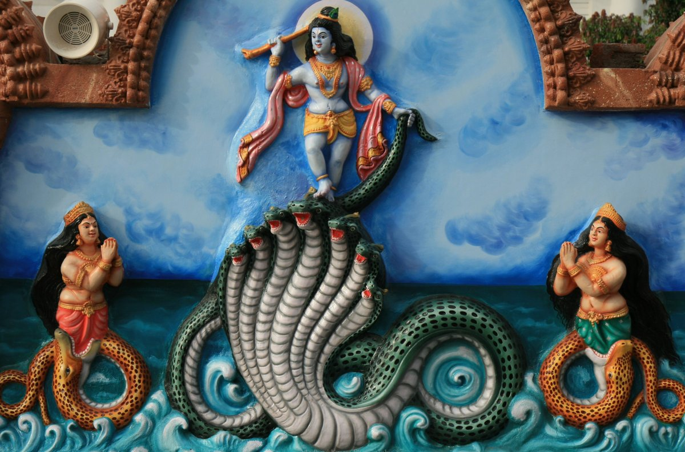
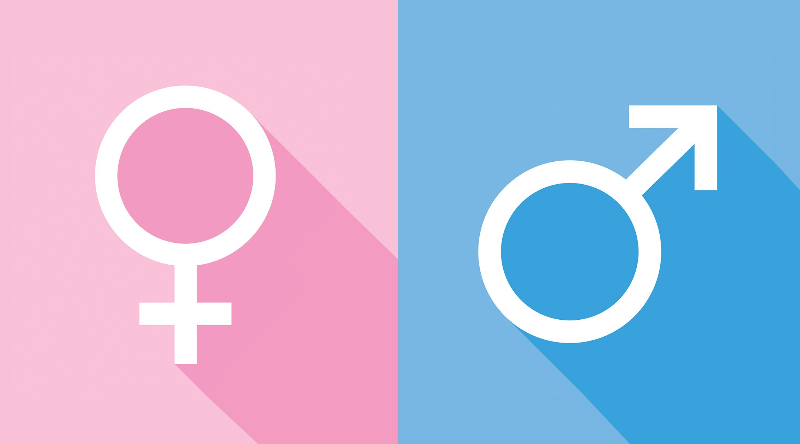

Culture
From depression to royalty to trust, blue holds more meanings than any other color around the world. In Western Cultures, blue is commonly associated with feeling melancholy—hence, having “the blues.” And while that’s true, it’s also considered to be a calming and soothing color that symbolizes trust, security, and authority—a reason why many American banks, such as Citi and Bank of America, use blue for their logo.

China

Blue is also a symbol of masculinity and represents the birth of a boy—the opposite of China, where blue is considered a feminine color.
Middle East
In many Middle Eastern countries, blue means safety and protection, and is symbolic of heaven, spirituality, and immortality.
Religion
Many religions have their own associations for the color blue as well. For example, in many Latin American countries—which are known to have high Catholic populations— blue is a sign of hope and good health, and is symbolic of Virgin Mary, who is often depicted wearing a blue robe and headscarf, and represents wealth.
In Judaism, blue is the shade for holiness and divinity, and in Hinduism it’s the color of Krishna—the most highly worshipped Hindu god who embodies love and joy, and destroys pain and sin.